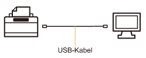
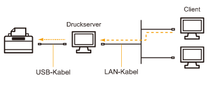

Der Druckertreiber ist eine Software, die für das Drucken mit diesem Drucker erforderlich ist.
 |
Nähere Informationen zur Systemumgebung, die für die Verwendung des Druckertreibers erforderlich ist, finden Sie im Abschnitt "Systemanforderungen für den Druck".
|
|
|
Die Vorgehensweise zur Installation des Druckertreibers hängt von der Systemumgebung ab. Lesen Sie einen der folgenden Abschnitte entsprechend Ihrer Systemumgebung.
Wenn Sie den Drucker und Computer über ein USB-Kabel verbinden

Es gibt die folgenden zwei Möglichkeiten, den Druckertreiber zu installieren.
<Einfache Installation>
Installiert den Druckertreiber von der mitgelieferten CD-ROM (CD-ROM-Installation). Die e-Anleitung wird gleichzeitig installiert.
<Plug & Play>
Erkennt den Drucker über Plug & Play und installiert den Druckertreiber durch manuelle Auswahl von der mitgelieferten CD-ROM.
Wenn Sie den Drucker in der Druckserverumgebung verwenden

Wenn Ihr Computer der Druckserver ist
Nähere Informationen zur Vorgehensweise beim Installieren des Druckertreibers finden Sie im oben aufgeführten Abschnitt "Wenn Sie den Drucker und Computer über ein USB-Kabel verbinden".
|
|
Konfigurieren Sie den Druckserver nach Abschluss der Installation.
|
Wenn Ihr Computer ein Client-Computer ist
Es gibt die folgenden zwei Möglichkeiten, den Druckertreiber zu installieren.
<Lokale Installation>
Sie können den Druckertreiber von der mitgelieferten CD-ROM installieren.
<Download-Installation>
Sie können den Druckertreiber ohne die mitgelieferte CD-ROM installieren, indem Sie den Druckertreiber vom Druckserver herunterladen. Es gibt die folgenden zwei Möglichkeiten, den Druckertreiber herunterzuladen und zu installieren.